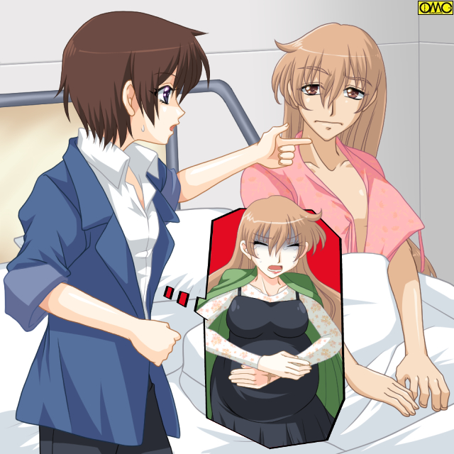
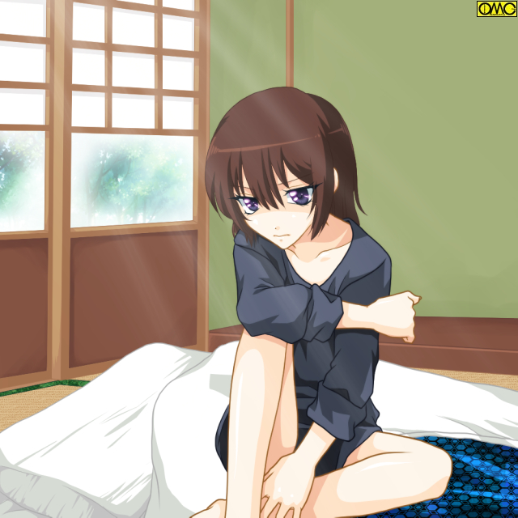

一夜明けて……
大学生活を東京でしていたため、たまに帰省していたものの、ほとんど高校時代のままの自分部屋。
そこで目覚めたいずみは目覚めて、しばらくはぼやーっとしていた。
差し込む朝日が心地よく、まどろんでいた。
だが鼻をくすぐる匂いに違和感を覚える。
その「女の香り」を醸し出していたのが自分と気がつき、そして思い出す。
「そうだった。俺……昨日、女になっちゃったんだっけ…」
湯の街奇談
第二話（リライトバージョン）
作：城弾
緩慢な動作でいずみはトイレへと向かう。
立ったまま用をたそうとしてまさぐるが、指に何も引っかからず改めて現実を思い出させられた。
「はぁっ」
吐息すら高くなった声。
パジャマのズボン。そして下着をおろし、力が抜けるようにしゃがみこむ。
これならまだ男でもある姿だったので、まだ抵抗がなかった。
黙々と一人で朝食を摂るる。
父（そして生みの母と判明した）幸太郎。母・みどりは宿の仕事に出向いていた。
「おはよう。お兄ちゃん」
温子がパジャマ姿でやってきた。
「ああ。おはよう」
何度口にしても高い声。意識しないと低い声が出ない。押し殺したような声になる。
「あ…そうだったね。昨日『事故』で…」
顛末を思い出した妹である。ご飯を自分で盛り向かいに座る。
食べようとして思い出したように「でも今だと、声を聞くかしないと女になったって言う感じしないね。顔もじっくり見ないと、女の子の顔に見えないし。でも男にしては色白かな？」と言う。
「今ならまだごまかしは効くが…」
それきり黙ってしまう兄妹。
黙々と食べていたが温子は父の言葉を思い出す。
「そうそう。お兄ちゃん。午後から病院に行けってお父さんが言ってたよ」
「病院って…」
こんな『神秘の力』で変貌したものを治療できるのか。僅かに期待をするものの「検査をしてもらう約束してきたって。もしかすると入院かもだから、その時はあたしが戻って色々着替えとか持ってくね」ただそれだけだったと知り落胆する。
「検査入院って……検査はともかく入院となったら病室は男女どちらなんだ？」
半ば現実逃避の言葉だった。
出向いたのはあの産気づいた妊婦を運び込んだ病院だった。
（そういえばあの妊婦。無事に出産したかな？）
これまたある種の現実逃避でそんなことを考えるいずみ。
自分も男に戻るためには「出産」をしないといけないらしいが、どうしてもその事実に目を向けられない。
病院にてまず徹底した検査の結果、完全に女性と判明した。
なったばかりでサイズを除けば子供のそれだが、女性としての器官はきちんと活動をしており、時間が来れば子供を産める体になる。
写真を突きつけられても認めたくない事実だった。
「明日また検査をします。朝になりますが大丈夫ですか？」
「はい。大丈夫です」
本音はもう来たくなかった。ますます女に近づいていたら……しかしとりあえず体を知る必要はある。
約束を取り付けて病院を出ようとする。が
「温子。ちょっと待っててくれ。トイレにいくから」
緊張感で忘れていた尿意を思い出した。
「おにい……お姉ちゃん。わかってるでしょうね？」
人前なので呼び方を改める温子。いわんとせんことは理解できたが、さすがに抵抗があり
「個室なら男用でも…」
そう反論するいずみだが
「だーめ。今は女だってのははっきりわかったでしょ」
温子は腰に手を当てて大声で言う。
「声がでかい」
慌てて止めるいずみ。うるさいから仕方なく女性用を使うことに。
用をたして出るときに偶然だが前日の妊婦に出会った。
「あんたは…」
「！？」
妊婦は激しく動揺する。
「どうしてここにこいつが？」と言う表情だ。それをいずみは誤解した。
「あはは。驚きました？ 俺……いや。あ、あた……あたしは女だったんですよ。男に見えるかもしれないけど。ほら。のど仏ないでしょ。それにこの声。子供みたいな声だけど」
のど元を大きく開けて指差して見せる。
いずみは「妊婦」が驚いたのは、前日にあった「男」が「女子トイレ」にいるからと解釈した。
不本意だが騒がれないために「実は女」と言う芝居をした。
（信じないだろうなァ……でも裸になれば女とわかってくれるだろうけど）
心の中で冷や汗だらだらである。
「うっ…」
妊婦の方が脂汗を流して蹲った。
「どうしました？」
あわてて駆け寄るいずみ。瞬時に「当然の連想」が出る。
「もしかして生まれる！？」
こうなると手におえない、
「誰かーっ。生まれるーッ」
突然の場面に動揺したいずみは、トイレにも連絡ボタンがあるのも失念して、考えなしに叫ぶ。
子供のような声で甲高い分だけ通りがよく、すぐに表の看護婦が駆けつけてきた。
妊婦は分娩室へと運び込まれた。
そして数時間。乗りかかった船ということか。なんとなく気になって居残り、長椅子の前で行ったり来たりのいずみ。
「もう。お……姉ちゃん。動物園のクマじゃないんだから」
付き合いのいい妹である。
「だって気になるじゃないか。二度までもあんな場面に出くわして」
「そりゃあそうだけど」
「親父たちに連絡は入れたんだろ？」
「うん。お母さんも『いい機会だから付き合ってきなさい』と。それにおねえちゃんも今度はあの扉の向こうだとも」
ぴんとくるわけがなかった。分娩室で身を引き裂くような痛みに耐えて、命をこの世に送り出している自分なんて想像もつかない。
「連絡といえば、この妊婦さんのだんなさん来ないね」
そうなのだ。例え仕事をしていても、こういう事情なら早退も可能なはず。すでにどっぷりと日が暮れているのに、誰も現れる様子がない。
「自分の妻より仕事かよ。薄情な父親もいたものだな」
いずれ自分がなる身ゆえか、妊婦に同情的ないずみは憤慨する。
そしてまだ待ち続け…元気な産声を聞いたときは思わず涙したいずみである。
「生まれたんだ…よかった。よかったね」
兄妹…今では姉妹だが手を取り合って喜ぶ。
分娩室の扉が開き新しい母親と子供が運ばれていく。
だが母親の表情は大仕事をやり遂げた晴れやかなものではなく、屈辱に耐えている様子も僅かに含んでいた。
その夜は大感動したいずみの大演説会となった。
幸太郎も宿の切り回しで忙しい身の上だが、突然の変化で心細いであろういずみを気遣い、食事をともにしていた。温子もいるが女将である母・みどりは旅館のほうにいた。
「凄いよ。妊婦って。十ヶ月もあんな身重で過ごして、長い時間かけて腹を痛めて子供を産むんだから。確かに母親は強くなくちゃね」
「その母親にお前もなるんだぞ。そうしないと一生、女のままだ」
覚悟を促す幸太郎の発言。
「うん…でもなんか実感がないよ。この声が嫌でも自分が女になったって教えてくれるけど…」
沈黙が支配する。
「ねぇ…本当に方法はそれしかないわけ？ やっぱり…嫌なんだけど…」
「気持ちはわかる。だが、一人として他の方法で戻れたものはいない。だが最初の『アレ』が来るまでに戻った者もいない。まだ子供を産める体になりきっていないからだ。つまり一度なったら最後。最短でも１１ヶ月は女で過ごさねばならない」
「最初の『アレ』が来るまで一ヶ月くらいなわけか。それからすぐ妊娠しても十ヶ月は妊婦で…」
「今日は検査をしたのだろう。明日いくのはその女性としての器官が『成長』しているかのチェックじゃ」
「たった一晩でそんなに変る？」
「考えても見ろ。僅かな時間でその体になったのだぞ。普通の女性に比べると猛スピードで『大人』の体になっている。それが未発達だといつまでたっても逆に女のまま。そして女として過ごすうちに結局は結ばれて身ごもるものもいる。どうせなら早くにすれば戻れるぞ」
「わかった…つもりだけど…」
どうあっても踏ん切りの悪いいずみである。
「もう。お兄ちゃんてば。はっきりしないなぁ」
「無理言うなよ。生まれ着いての女は『覚悟』もあるだろうけど、昨日までそんなもの縁がなかったんだぞ。俺は」
「時間はある。いやでもせざるをえない。男に戻りたいならなおさらな」
翌朝。まだ人のいない早朝を利用して検査を進められた。
「昨日より成長が認められますね。順調なら今までの例からいっても、一ヵ月後には生理がくるでしょう。そうしたら『可能』です」
いくら医者でも『何が』まではいえなかった。それを理解したいずみだが、ふと気がついた。
「『今までの例から言って？』 ちょっと待って。と、言うことはこの病院では前例がある？」
「そりゃあ…そうですよ。何しろ『子宝の湯』はこの土地にあるのですから。それこそ江戸時代から実例が山ほど。実際にそれを解除すべく、妊娠した妊婦さんもいらっしゃいますよ。プライバシーにかかわるのでどなたかは教えられませんが」
「すると…俺が…妊娠したら」
「ええ。うちの病院への入院をお勧めしますよ。ただカモフラージュで妊婦は生まれついての女性も、子宝の湯に落ちた男性もそれぞれ個室でわからなくしてありますから」
「どうだった？」
車で送ってきた温子が尋ねる。待合室で待っていたのだ。
「（子供が）出来たらここに入れってさ」
自嘲気味に言う。いずみの心情を思うと二の句の告げない温子。それを救ったのが、けたたましい赤ん坊の泣き声だった。
「昨日生まれた子だったりして」
温子はさっさと声のほうへといく。ごまかすと言うより前夜の感動が蘇えったのだ。
「おい。迷惑だろう。温子」
そう言うもののいずみも興味が勝り、温子の後をついていく。
医者の言うとおり個室ぞろいだった。その中でひとつだけ扉の開いていた部屋がある。そしてぴたりと止まる赤ん坊の声。
（差し詰めトイレに行ったら赤ちゃんが泣き出して、慌てて戻ったから鍵まで気が回らなかったってところかな）
そんなことを考えつついずみもついていく。
「おはようございまーす」
温子は扉から顔を見せて挨拶をしてしまう。
元から物怖じしない性格の妹だったが、ここまで大胆とは思わなかった。
「あなたは……」
「あたしたちのこと覚えてます？ よかったら赤ちゃん見せてくださーい」
「お兄さんもいるの？ だめ。だめなの。帰って」
「あ。ダイジョブタイジョブ。お兄ちゃんでなくてお姉ちゃん。女ですから。ほら。お姉ちゃん」
招かれてやむを得ず病室内に。
躊躇うのも当然だった。新しい母親は胸をはだけて、母乳を飲ませていたのだ。
（わぁ！）
いずみは感嘆した。思わぬヌードにではない。
母親の持つ神々しい母性が作る優しい空気に。
新しい命を見つめるその瞳はあくまで優しく、慈愛に満ちていた。
だが、その表情が苦悶のそれに変わる。昨日までなら陣痛だったが……
「どうしました？」
「お願い……帰って。見られ……たくない」
「何を言っているんです？ ナースコールだ」
慌ててスイッチを入れようとするが、その手を叩き落とす母親。
その手は白魚のような指から、ごついものに変っていた。
「えっ？」
指だけでない。腕も筋張ったそれに。細い肩幅が広くなっていく。
赤ん坊に母乳を与えていた胸は平たくなり面影すらない。
出産したばかりなものの細く華奢なウェストは、筋肉の割れた腹部に。
そして顔も眉が太く。鼻は高く。肌は浅黒くなっていく。その顔は
「しょ……翔！？」
思わぬ形での親友との再会。
「……久しぶりだな。こんな形ではあいたくなかったが」
声すらも低く渋いものになっていった。いや。「戻った」のだ。
「お前……まさか『子宝の湯』に？」
何とか声を絞り出すいずみ。
「ああ。へまをしたぜ。あの林の中で山菜取りをしていたらふらふらと」
「彼」の名は佐伯翔。
いずみの高校時代の悪友で、不良グループ相手の武勇伝があるほどの男だった。
それがまさか妊婦として再会するとは。いや。わずかな時間だが女同士だったことにもなる。

このイラストはＯＭＣによって作成されました。
クリエイターの高天リオナさんに感謝！
話を総合するとこうだ。
恋人がいたために地元に残った翔は旅館で働いていた。
その際に夕食用の山菜をとっていたら『何か呼ばれたように』子宝の湯に。
女性に変貌してしまったため彼女との仲も冷え、そのまま一年を過ごしたころ、誘われるままに泊まり客の相手を。
本当の女性でさえ嫌がりそうな一夜だった。愛などかけらもない、ただ繋がっただけの一夜。
それでも子種は得た。
「父親」は一夜の契りを交わして帰っていった。
たった一人で翔は妊婦として過ごしていた。
「一時は自殺すら考えたよ。あんな行為の後ではな……けど腹がでかくなるにつれて考えが変った。お腹の子には罪はない。死ぬのはそ産んでからでもと」
「それで……」
「それで？」
「死にたいのか？」
翔は笑顔で首を横に振る。
「この子を残して逝けるかよ。すでにこの子は俺と言う母親を失ったんだ。これからは俺が父親として育てないとな」
男に戻ったものの優しい笑顔で赤ん坊の頭をなでる。
「女の子か……いい恋が出来るといいな。俺は恋を知らずに子供を産んだだけにそう思うよ」
「翔……」
翔は子供に向けていた優しい笑みから、引き締まった表情になっていずみに向き直る。
「いずみ。悪いことは言わない。男に戻りたいならなるべく早くやれ」
「冗談じゃねぇ。誰が男なんかと」
その気持ちはわかる翔である。だからあえてきつく言う。
「中途半端だと逆に戻りたくなくなる」
「やっぱり……やるしかないのか？」
いずみは現実を突きつけられ、暗澹とした気分になった。
二日後。
部屋でこもっていても何の解決にもならないし、体を動かさせる目的でいずみには宿屋での仕事が与えられていた。
洗い場の掃除。あるいは整頓がその仕事だった。
浴衣の裾と袖を捲し上げたスタイルであった。
測定したらトップ７３．アンダー６５と言う胸元ゆえ、だぶついた服ならわかりにくい。実際にブラジャーは着用していない。
男湯でオケ等を片付けにきたときだが、男性客は何の関心も示さなかった。堂々と股間を晒しているものすらいる。
（まぁ「男同士」だからな。俺はまだ男に見えると言うことか）
考え事をしながら桶を片付けていく。その際に一人の客とぶつかってしまった。
「おっと。ゴメンよ」
「いいえ。平気ですから」
客商売となれば声を出さないわけにも行かない。嫌だったが返答した。その途端だ。
「えっ？」
「女……？」
股間を晒していた客は慌てて湯船に飛び込む。他の客も閥が悪そうにしていた。
（うー……声を出さなければまだ男で通ってもなァ）
そろっての女扱いに苦笑する。
女湯では逆に女性客が慌てて湯船に入ってしまった。いくら従業員でも男は男というわけである。
「ちょっとあなた。お風呂場の整理はご苦労様だけど、女湯には女の人を入れてくれない？」
恰幅のいい中年女性が文句を言う。
「はぁ。申しわけありません」
童女のような声で謝るいずみ。
「えっ？」
「女の子だったの？」
「あらほんと。よく見たらのど仏もないしお尻も大きいわね」
（よく見ると女とはわかるのか……）
この時点ではその程度だったのだが…
一ヵ月後のある日、いずみは仕事を休んでいた。
「お兄ちゃん。具合はどう？」
いずみの心情を慮り人前でない限り、男扱いの温子が様子を見に来た。
「いいわけないだろ……俺にとっては『初潮』なんだぞ」
初めての生理が訪れていた。
これでやっと妊娠可能な肉体になったことが判明した。
「くそっ。こんなに苦しいものとは知らなかった……なんでお前は寝込まないんだよ？」
「そりゃあたしは小学校からの経験があるもん。多少の痛みや出血は平気だよ」
「信じられないよ……うぅ。苦しい……」
初体験の痛みに腹を押さえて耐えるいずみ。
「もう。お兄ちゃん。子供産むときはもっといっぱい痛くて血が出るんだよ。そのくらいで泣いていてどうするのよ」
「理屈はさそうだけどさァ……」
そして生理が収まった朝。いずみは胸元と頭に違和感を覚えた。鏡を見る。
「なんだよ！？ これ？」
女になったばかりは男時代の名残で短い髪だった。だから洗い場では男と「間違われた」
一ヶ月がたち襟足にかかる程度にはなっていた。
それが初めての生理が終わったら一気に肩口に達していた。
それもさらさらと指先からこぼれるしなやかさ。
「そういえば翔も女のときはこんな髪だったか……」

そしてもう一つの違和感を確かめるべく、鏡の前でパジャマをはだける。
「やっぱり……」
そこにはどう見ても前日より大きくなった胸が。
「んーと、アンダーは６５で同じね。でもトップが……すごーい。８１だって。一気にＢカップ。アレ？ Ｃかな。とにかく赤丸急上昇だよ」
確かめるべく温子に測定を依頼したらこの言葉である。
「な、なんで？」
呆然とするいずみ。一晩でぐっと女らしさがアップしてしまえば無理もない。
「やっぱりお父さんの言ってたのじゃない？」
「アレのたびに女っぽくなると言う奴か？」
「……気がつかない？ お兄ちゃん。声」
「！？」
はっとなるいずみ。言われてみれば、前日まで童女のようだったそれが、澄んだ高いものに。
『童女』から『少女』のそれに。
女性化がより進行していると感じたいずみは、仕事を休んで病院に検査にいくことにした。
ところが着替えの際にさらに愕然とする。
ズボンがまるで合わない。ヒップが張り出してはいたがそれがより大きくなったのか、きつくてはけない。
やっとの思いで尻を収めたものの、かなり裾が余る。
「何で？ この前までぴったりだったのに」
「寝込んでいる間に変わったみたいね…アレ？ お兄ちゃん。背が……縮んでない？」
「そんな馬鹿な？」
否定するのだが……
病院にて。
「前回の検査のときは１０歳児程度の成長でしたが、今回の検査で１３歳児程度にまでなっていることがわかりました」
淡々と言い放つ医師。
言われているいずみは死刑宣告でも受けている気分なのだが。
「それに伴って乳房の成長が見られますね。女性ホルモンも大量に分泌されています。ますます女性的になるでしょう」
事務的に言い放つ医者に、殺意すら覚えるいずみである。
「あのー。もしかしてお兄ちゃんの背。縮んでません？」
温子か疑問をぶつける。
「これも『子宝の湯』の被害にあった男性には見られる現象です。女性器官を作り上げるのに『喰われて』いるのですね」
「喰われて……」
「言い方がおぞましいですね。胸や腰。見えない部分では子宮や卵巣を成長させるために、そしてより女性に近づけるために身長が犠牲になっています。測定したところ身長は１６５センチと五センチマイナス。体重も４７キロで三キロダウン。今までの統計で行けば恐らく１５８センチ４４キロぐらいで落ち着くかと」
「そんなに？」
病院を出て車に乗り込む。否定したくともどんどんと女性化の進むこの体。自然と落ち込んでしまう。
「よし。お兄ちゃん。ショッピングに行こうっ」
唐突に運転席の温子が言う。
「買い物？ 何をだよ」
怪訝な表情のいずみ。
「決まっているじゃない。服よ。服」
「まぁ……いいか。気晴らしに付き合ってやるか」
車はデパートへと走る。
デパート。下着売り場。
「ＢからＣですね。それではこちらの商品などいかがでしょうか」
にこやかに勧める店員。
「温子。お前の服を買いに来たんじゃないのかっ！？」
「おに……おねえちゃんのに決まっているでしょ。いちいち苦労してズボン穿いていちゃたまらないでしょ。胸ももうノーブラとは行かないし」
「それでは試着が終わったらおよびください」
いずみに有無を言わせず、さっさとカーテンを閉めてしまう店員。
「手際がいいんですねぇ」
感心してしまう温子に「この土地ではああいうお客さん多いですから。女性下着をつけるのに抵抗のある『元・男性』」が。だから有無を言わさずに押し切っちゃうのがコツですよ」にこやかに返す店員。
「はぁ」
意外とこの土地に「子宝の湯」対策は根付いていると感じた温子。
「それにそういう人に限って付け心地にはまって、拘りだすんですよ」
「そういうものですか？」
「元が男性だから男性の目でも見るんでしょうね」
寝込む前まではノーブラだった。それがいきなりこれだけの大きさに。
女の胸を見たことがないわけではないが、自分の胸に実っているのは当たり前だが初めてだ。
好奇心に負け、ちょっと揉んでみた。
「あっ！？」
思わず声が出た。女性特有の器官だから、男の時には感じなかった感覚が。
（話には聞いていたが……すると）
ここまで敏感では確かにＴシャツだけとは行かない。諦めて下着をつけることにした。そしてそのフィット感に驚く。
（悔しいがこっちの方が落ち着く。しかしブラジャーをつけるなんて変態になった気分だ……今の見た目は女だからいいけどな）
とりあえず安いものを購入した。
妊娠しても、女性化が進んでも胸がもっと大きくなるのは予測できたからだ。
加えて生まれついての女性が『子宝の湯』の効果で胸が大きくなるときもあり、ここには大きいサイズが揃っていた。
心得ていたのは下着売り場だけではない。
スカートを買いに出向いたときに妥協したのがキュロット。
スカートの中では一番ズボンに近いせいか、まだ抵抗が少なかった。
この売り場もそれを見越してか、かなりバラエティにとんだキュロットのバリエーションだ。
もちろん女性の体にあわせてあるものなわけだから、今のいずみにはむしろ楽だった。
あわせて買ったブラウスも、胸元とあわせを除けば男物のようなデザイン。
この売り場がいかに『性転換した男』のために対処しているかよくわかる話である。
「これにしますよ」と店員に差し出したいずみは、温子がいないことに気がつく。
見回していると温子が紙袋を手に戻ってきた。
「なんだ？やっぱり自分の買い物もしたのか」
「うーん。そういうとこ」
何か含みのある妹である。
そのまま女性服で帰宅するいずみ。自室で鏡を見てみる。
（こんなかっこうしたら女にしか見えないな。女装しているようになるかと思ったのに）
よく見るとさらに肌が白くなっていると気がついた。
（二度目が来たら、どこまで女っぽくなっちゃうんだろう……）
まるで男の自分が消えてなくなりそうで怖かった。
物思いにふけっていると不意に温子がやってきた。
「なんだよ？」
えへへと笑うと温子はデパートで手にしていた紙袋を開いて、中身を取り出す。
「化粧水にファンデーション。チークに口紅。マスカラにアイライナー。それから乳液。一応一通り買ってきたよ」
導かれる答えはわかりきっていたがささやかな抵抗で言う。
「化粧するなら自分の部屋でしろ」
しかしそんな抵抗もむなしく妹は
「お兄ちゃん……じゃなかった。お姉ちゃん。今日はメイクの仕方を教えてあげる」
やっぱり楽しんでいるな。こいつ。いずみは思う。
「ダメだよ。暗い顔しちゃ。どっちにせよしばらくは女なんでしょ。お化粧くらい出来ないと変よ。だったらせめて楽しみましょう。綺麗になりたい？ 可愛くなりたい？」
おもちゃにしてんだろ。そう言いかけたが正論でもある。教わることにした。
「身だしなみ程度って奴でいい」
だが、きっちり可愛くされた。
どうやら驚かせたいらしく、レクチャーなのに鏡は見せてもらえなかった。
「うっ？」
メイクしている人間に絶句されて不安になるいずみ。それに対して妹は言う。
「鏡、見てみる？」
ようやっと、そして恐る恐る見た鏡には知らない自分がいた。
化粧栄えする顔だったのかかなり可愛くなっていた。
「こ……これが俺か？ これが」
「ダメよ。そんな言葉づかいじゃお兄ちゃん……だめだわ。この姿を見たらもうお兄ちゃんなんて呼べない。今日からは元に戻るまで『お姉ちゃん』だよ」
「やめてくれよ。俺を家でぐらい男にしといてくれ」
「もう。そんな可愛い顔と声で『俺』なんて言っちゃだめ。『あたし』って言って御覧なさい。女なんだから」
「いえるわけないだろ」
「もう。乱暴な口の利き方をしちゃだめ。仮にもお客さん相手の仕事でしょう？」
確かにそうだ。見た目は完璧に女。声もだ。
これで「俺」なんて言われたら、自分が客の立場なら違和感を覚えるだろう。
「わかったよ」
渋るが納得したので言うことにした。
「あ、あたし。これでいいんだろ」
「それを言うなら『いいんでしょ』よ」
結局、話し言葉講座が一時間は続いた。
「ほう。これはこれは……わしの若いときにそっくりじゃな」
男のときに言われるならまだしも、かつて女であった時期のある父親に『そっくり』といわれるのはあんまり嬉しくはなかった。
恐らくは「そのころ」にそっくりなのだろう。
もっとも女の姿が、父親の男としての『若かりしころ』に似ていたら、いくら生まれついての女性でなくても嬉しくはない。
「あら。ほんと。確かに似てるわね」
母親までのんきに言う。今は食事休憩。
せっかくだからと温子は二人に見せるべく夕食まで脱がせなかったのだ。
「なァ……オフクロ。まさかと思うけど……オフクロも元は男だったとか」
「違うわよ」
拍子抜けするくらいあっさりと否定する和服美人。
「母さんはこ昔からこで働いていてな。評判の美人じゃったぞ。そのとき、女になってしまったわしを慰めて、面倒を見てくれたのが縁でこうして今に至るわけじゃよ」
「じゃあ」
『温子は』はと言いかけて遠い記憶を呼び起こす。そういえばお腹の大きい母に『もうすぐあなたの弟か妹が生まれるのよ』といわれたことが。
「俺の……」
「あたしの！！」
即座に女言葉にするための温子のチェックが入る。
「わかったよ。あたしを……父さんに産ませたのは誰？」
ギクッとなる幸太郎。出生の秘密を問われれば当然か。しかもかなり特殊だ。
「まぁ……いいじゃないか」
「よくない。もしかしたら俺はただオヤジが男に戻るためだけに作られたかもしれないんだぜ」
静かになる団欒。
「……いずみ。明日ちょっとわしに付き合え。ちゃんと綺麗にしてこいよ」
それっきり何も言わない父親に、問いただすのは諦めて食事を進めた。
翌朝。幸太郎の運転する車に乗ったいずみは前日に買った女性服姿だった。
メイクだけは温子にしてもらったが、律儀に約束を守り『綺麗に』してきた。
車は寺へと走る。そして途中で買った花束を持つ父親について歩く。
（墓参り？）
しかし初めて来る場所だ。祖父や祖母のものでもない。
線香を上げる父親の背中を見つめるいずみ。
大きな背中が何故だかひどく小さく、まるで女性のように華奢に見えた。
「誰の墓なんだ？」
うすうす感づいてきた答えを知るために訊ねる。
「わしの親友。そしてお前の父親だ」
「！？」
するとこれは実の父親の墓か？ 今の父。幸太郎に女を感じたのは「夫」の前だからか？
「……あの時、どうしても子供を宿せないわしは自殺まで考えた」
ポツリと背中越しに語りだす幸太郎。
「だが義朗は……ただ一言。『死ぬならすべてやりつくしてからにしろ』といってくれた。その瞬間、惚れてしまった。女になったんだな。わしは。無我夢中で抱かれたよ。あれほど嫌悪していた『女としての交わり』が不思議と嫌じゃなかった。それが『愛』だったんだろうなァ」
昔を懐かしむ父親。
「わしは愛され、そしてわしも義朗を愛した。お腹の子供が育つたびに、女で生きてもいいとすら思えた。こうして愛されるなら女でもいいと」
「……」
背中を向けた独白……いや。いずみの二人の父親の『思い出話』は続いた。
「皮肉だったよ。わしに生きろといった義朗が事故でな。後追いは考えなかったよ。生きてお前を育てることが、何よりの供養と思ったしな」
頬を伝う熱いもの。
「父さん……」
「いずみ。確かにお前は、わしが男に戻るために作られたかもしれない。だが、そこには確かに二人の愛があった。これでは不満か？」
いずみは何も言えなかった。言えば嗚咽にしかならなかった。
ただ自分が相手を思いやる気持ちから産まれたと知ってそれで充分だった。この親子にはそれで充分だった。
墓に手を合わせていた幸太郎が、優しい声色で語る。
「義朗。あなたの子よ」
『夫』に報告する幸太郎。気持ちだけ女に戻り、女言葉で語る。
男の声なのに不思議と気持ち悪くないのは、一時だが心が女になっていたからか。
「お父さん……あたしがいずみです……」
いずみはもうひとりの父親に、深く祈りをささげた。
その夜。いずみは決意を固めた。
（どのみちやるのなら……同じ境遇だったあいつならわかってくれそうだ。覚悟……決めなきゃ）
次の日。いずみは親友・翔の家へと出向いた。
あとがき（リライトバージョン）
元のバージョンは２００４年に書かれたもので、イラスト投入に合わせてのリライトが２０１４年と十年経ってからの見直しで。
十年前のつたなさにめまいが（笑）
もう少し読みやすくはなったかと。
またこの作品の雰囲気を考え、ギャグは削りました。
一話で出た謎の妊婦。その正体がいずみの悪友。翔で。
翔にしたら一番見られたくない相手に、妊婦としての姿を見られてしまって。
先に子宝の湯の魔力にとらわれて子を生した翔は、いずみの苦悩が理解でき、優しくなりすぎてそれが……
お読みいただきありがとうございます。
城弾